直近1週間の人気フィード
はてなブックマーク数を元に新着優先で並べ替え
好きな声で好きなセリフを喋らせられるローカルAI「Irodori-TTS」の使い方、日本語特化でローカル動作するので無制限に生成し放題 398
398 GIGAZINE
GIGAZINE
「Irodori-TTS」はAratako氏が開発した日本語特化の音声合成AIモデル(TTSモデル)です。ローカルで動作する軽量モデルで、「セリフ」「声」「感情」を自由に指定して音声を生成することができます。NVIDIA製GPUを搭載したPCなら数秒で生成可能で、GPU非搭載PCでもCPUを使って生成できます。かなり高品質なセリフ音声を作れて便利なので、インストール手順や使い方をまとめてみました。続きを読む...
1日前
無料で個人サブスクを管理できる「Wallos」、オープンソースでセルフホスト可能 137 GIGAZINE
動画配信サービス・クラウドストレージ・ドメイン更新・スマートフォンアプリの有料プランなど、毎月・毎年発生するサブスクリプションは気づかないうちに増えていきます。「Wallos」は定期支払いを一覧化し、次回支払日や月額・年額の合計、カテゴリ別の支出を確認できるオープンソースのセルフホスト型サブスク管理ツールです。続きを読む...
1日前
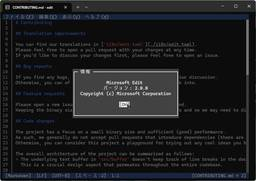
Microsoftの新CLIテキストエディター「Edit」v2.0.0が公開 ～待望の構文ハイライト追加／ショートカットキーによる行の移動や行全体の選択も可能に 71窓の杜
米Microsoftは4月29日（日本時間）、Microsoft製の新しいCLIテキストエディター「Edit」v2.0.0をリリースした。メジャーバージョンアップとなる今回は、待望の構文ハイライト機能が追加されている。
18時間前
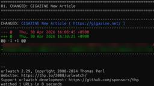
無料でウェブページを監視し、変更があった場合にメール・スマートフォン・その他の手段で通知を受け取れる「urlwatch」、オープンソースでセルフホスト可能 192 GIGAZINE
ブログや企業サイト、官公庁のお知らせページなど、更新を追いたいのにRSSが用意されていないページは今でも多く存在します。「urlwatch」を使うと、指定したページを定期的に取得して前回との差分を比較し、変更があった時だけ通知を受け取ることが可能です。メールやSlack・Discord・Telegramなどに対応しており、自分専用の更新通知システムを構築できます。続きを読む...
2日前
「過去への通信」が未来への通信より効率がいいと理論的に証明――発想はSF映画『インターステラー』のあのシーン 90 ナゾロジー
ナゾロジー
過去に向けた情報送信というと、多くの人は「SFの領域」と考えるはずです。 しかしMITなどで行われた研究により、理論上は過去に向かって情報を送ることが可能であるばかりか、過去に向かって送るほうが、ふつうに未来へ送るよりも「効率がいい」場合があることが数学的に示されました。 発想の源は、宇宙論と物理学をリアルに描いたSF映画『インターステラー』であり、論文では過去に向けた通信場面を取り入れた解説も行われています。 さらに論文の参考文献には『バック・トゥ・ザ・フューチャー』の登場人物の名前も並んでいます。 ここまで遊び心が溢れていながら、論文は物理学のトップ誌『Physical Review Letters』の審査に通り掲載が決定しています（2026年4月14日に受理）。 しかし、過去への通信が未来への通信に勝るとは、いったいどういうことなのでしょうか？
1日前
AIモデルに「あなたは熟練プログラマーです」と伝えるとかえってプログラマーとしての能力が低下する 127 GIGAZINE
AIへ指示する際に「あなたはこの分野の専門家です」と伝えることで性能が向上する、というウワサがまことしやかにささやかれています。このウワサを検証した研究がプレプリントサーバーのarXivに掲載されました。続きを読む...
3日前
無料でYouTubeなどから動画・音楽をダウンロードできるAndroidアプリ「YTDLnis」、オープンソースで開発され広告やユーザー登録なしで利用可能 31 GIGAZINE
動画のダウンロードを頻繁に行う人ほど、複数のダウンロードのタイミングを調節したり「寝ている間に自宅のWi-Fiでダウンロードしたい」といった管理をしたくなるはず。「YTDLnis」は無料で使用できて広告なし・ユーザー登録不要で、ダウンロードキューやスケジュールダウンロードなどを搭載した高機能なAndroidアプリです。続きを読む...
6時間前
「脱原発」を目指していたベルギーが方針転換して原子力へ注力へ、事業取得に向けた独占交渉を開始 85 GIGAZINE
ベルギーは2003年に原子力発電を段階的に廃止する方針を定めていましたが、エネルギー供給への不安などからその方針を転換しています。ベルギー政府は2026年4月30日、フランスのエネルギー大手であるENGIEが保有・運営する国内7基の原子炉を取得する条件を詰めるため、ENGIEと優先的に交渉する意向表明書に署名しました。続きを読む...
2日前
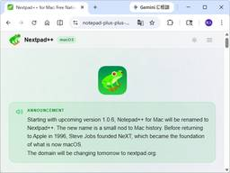
macOS版「Notepad++」プロジェクトが商標侵害・誤認誘導の疑いで炎上／次期バージョンから「Nextpad++」に改称へ【やじうまの杜】 29窓の杜
「やじうまの杜」では、ニュース・レビューにこだわらない幅広い話題をお伝えします。
12時間前
史上最強の剣士はだれ？世界の歴史に名を残す「伝説の剣豪7人」 38 ナゾロジー
人類はこれまで数多くの武器を発明しましたが、中で最もクールかつ絶大な人気を誇る武器といえば「剣」でしょう。 剣は何千年もの間、人類の主要な武器として狩りや戦闘に用いられました。 しかし一方で、剣は銃に比べて射程は短く、持っているだけで強力な兵器ではありません。 使いこなすために相当の技量を要し、その道を極めるためには長く厳しい戦いの世界を生き抜く必要があります。 それでも世界史を振り返ってみれば、各時代ごとに名剣士たちは存在しました。 そこで今回は、歴史に名を残している「伝説の剣豪7人」をご紹介します。
1日前
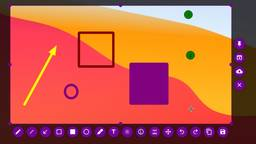
無料で非常に強力なスクリーンキャプチャツール「Flameshot」 63 GIGAZINE
ドキュメントやプレゼンテーションの資料などを作成する場合には大抵スクリーンショットを撮影する必要があります。WindowsやmacOSには標準でスクリーンショット機能が備わってはいるものの、より高度な編集機能やカスタマイズ性を求めるとサードパーティ製のスクリーンキャプチャツールが必要になることがあります。無料で使えるオープンソースソフトウェアでありながら、シンプルかつ非常に高機能なスクリーンキャプチャツールが「Flameshot」です。続きを読む...
3日前
知能が高い人は「他人の知能」もより正しく判断できるとの研究結果 109 GIGAZINE
知能とは何かを学習したり、推論を働かせたり、問題を解決したりする能力のことであり、社会的な交流を円滑に進める上でも重要です。人々は短時間の社会的接触から他人の知能を判断する能力を持っていますが、知能が高い人は「他人の知能」をより正確に判断できることが新たな研究で示されました。続きを読む...
3日前
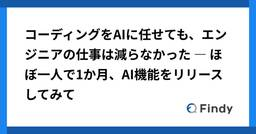
コーディングをAIに任せても、エンジニアの仕事は減らなかった ― ほぼ一人で1か月、AI機能をリリースしてみて 248 Findy Tech Blog
Findy Tech Blog
こんにちは、ファインディでFindy Toolsの開発をしている本田です。 このたび、Findy Toolsの新機能として「アーキテクチャAI」をリリースしました。要件を入力するとAWSのアーキテクチャ図と設計の提案が生成される機能です。 findy.co.jp 今回の開発では、PM・仕様策定・スコープ定義・インフラ・FE/BE開発・テストまで、ほぼ一人で1か月で担当しました。そして、コーディングはほとんどClaude Codeに任せ、私自身はほぼコードを書いていません。 この記事では、そんな開発を進めるなかで分かったこと、難しかったこと、そして改めて実感したエンジニアの仕事について紹介します…
5日前
英語のノベルゲームもこれで遊べる！ テキストを即時翻訳表示する「Hotkey Translator」／オーバーレイ表示で画面上のあらゆるテキストを多言語に翻訳可能【レビュー】 235窓の杜
「Hotkey Translator」は、Windows用OCRと翻訳オーバーレイを備えたオープンソースのソフト。未翻訳の日本語ゲームやビジュアルノベル向けに設計されているという。
4日前
「メタルギアソリッド2」のソースコードとアセットがネット上に流出 36 GIGAZINE
2001年に発売された「メタルギアソリッド2」のPlayStation Vita向けHD移植版である「メタルギア ソリッド HD エディション」のソースコードとアセットが、ネット掲示板の4chanから漏えいしました。ソースコードをリークした人物は、「メタルギアソリッド2」をPS Vita版に移植する作業を行ったArmature Studio経由でデータを入手したと報告しています。続きを読む...
2日前
海外から見た日本の鉄道網の分析、日本はどのように「21世紀最強の鉄道システム」を築き上げたのか 33 GIGAZINE
日本の鉄道は先進国の中で最高クラスの水準で人の移動を担っており、旅客キロの28％が鉄道で占められています。ブロガーで鉄道ファンのベネディクト・スプリングベット氏が、日本の鉄道の強さを日本人の国民性ではなく、民営化のあり方、都市開発、土地利用、自動車政策、規制設計といった制度の積み重ねから説明しています。続きを読む...
2日前
「コケのかけら」が墓荒らしの犯人を追い詰める手がかりになった事例 19 GIGAZINE
アメリカのイリノイ州にあるバー・オーク墓地で「遺体を掘り起こして別の場所に遺棄し、空いた墓所を再販する」という大規模な不法発掘事件が発生しました。この事件を解決する決定的な証拠となったのは、遺体とともに埋められていたわずかなコケの破片でした。続きを読む...
2日前
品質の言語化のススメー早期テストの原則をClaude Code Agent Skillsで実現する試み 149 LayerX エンジニアブログ
LayerX エンジニアブログ
LayerX QAエンジニアの小山です。 昨今、AIコーディングアシスタント（特にClaude Code等）の進化により、コードの実装やテスト追加のスピードが飛躍的に向上しています。しかし、AIにコードを書かせる際に「どこまで厳密なエラーハンドリングが必要か」「テストはどの程度書くべきか」といったことに迷われた経験はないでしょうか？ 今回は、バクラク事業部の品質の定義やテスト戦略などを言語化し、Claude Codeが動く際にリスクの高い箇所を守るように動いてもらい、テストも同時に生成してもらう、早期テストで時間とコストを節約する試みについてご紹介します。 ソフトウェアテストの原則「早期テスト…
5日前
検索サービス「Ask.com」終了、Ask Jeeves以来の29年の歴史に幕 29 GIGAZINE
検索サービスの草分け的存在として1996年に創業した「Ask.com(Ask Jeeves)」が、親会社・IAC Inc.の検索事業からの撤退に伴い、2026年5月1日をもってサービス提供を終了しました。かつては月間1億ユーザーを抱えるサービスでNASCARのスポンサーもしていたことがありますが、近年は存在感が薄れており、「閉鎖されていなかったことに驚き」などと報じる声もあります。続きを読む...
2日前
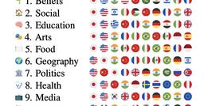
なぜ一部のAIモデルは「日本文化」に執着するのか？ 「4o-mini」などの出力が日本に偏る実態、欧州チームが研究発表 166ITmedia AI＋ 最新記事一覧
スペインのバスク大学や英カーディフ大学などに所属する研究者らが発表した論文「Why are all LLMs Obsessed with Japanese Culture? On the Hidden Cultural and Regional Biases of LLMs」は、一部のAIモデルが文化的な話題において日本文化に強い執着を見せることが明らかにした研究報告だ。
6日前
イラストも写真もドット絵に変換できるウェブアプリ「Sora’s Pixel Converter」 27 GIGAZINE
「Sora's Pixel Converter」はAmeniwa(あめにわ)氏が開発したドット絵変換ウェブアプリで、画像をドラッグ＆ドロップしてボタンをポチポチクリックするだけで印象深いドット絵を作成できます。面白そうだったので実際に使ってみました。続きを読む...
3日前
若いがん患者の生存率は「どの医療保険に入っているか」に左右されている 13 GIGAZINE
近年は若い世代でがんが増加していることが指摘されており、若いがん患者の治療や生存率に影響する要因を理解する重要性がますます高まっています。15～39歳の約47万人のがん患者を対象にした分析では、「医療保険の加入状況」が生存率を大きく左右していることが明らかになりました。続きを読む...
3日前
WireGuardベースのオーバーレイネットワークとゼロトラストネットワークアクセスを組み合わせ信頼性が高く安全な接続ができる「NetBird」、オープンソースでセルフホスト可能 22 GIGAZINE
リモートワークの普及により、安全な社内ネットワーク構築の重要性が増しています。「スマホ・PC間で安全なネットワークを簡単に構築できる『Tailscale』レビュー」のように簡単にVPNを設定できる製品も登場していますが、Tailscaleはホストサーバーが外部サービスとして提供されているためサービスの継続性やセキュリティ面に懸念があります。そこで、ホストサーバー自体もセルフホスティングが可能で無料で利用できる「NetBird」が公開されています。続きを読む...
3日前
ChatGPTの「画像生成」、どう進化？ 開発者に聞く “文字化け解消”の秘訣 49
ITmedia AI＋ 最新記事一覧
米OpenAIの画像生成AI「ChatGPT Images 2.0」はどのように進化したのか。ポイントを開発者に聞いた。
4日前
ChatGPTのボット検知システム「Turnstile」の内部構造とSentinelチャレンジの全貌が明らかに 18 GIGAZINE
ChatGPTが利用するCloudflareのボット検知システム「Turnstile」の内部構造および関連するSentinelチャレンジに関する詳細な解析結果が、セキュリティ研究やリバースエンジニアリングを扱う技術ブログサイトのBuchodiによって公開されました。ネットワークトラフィックの傍受とSDKの難読化解除を通じて解析が行われ、どのようにボットが検知されトークンが生成されるのかという仕組みが明らかにされています。続きを読む...
3日前
無料で簡単にGooglePlay以外の無料オープンソースAndroidアプリをインストールして自動更新できる「F-Droid」
5 GIGAZINE
Androidにアプリをインストールする場合、Google Playを経由するのが一般的です。ただしアプリ開発者から見ると、アプリを公開するためには登録料を払う必要があったり審査をパスする必要があったりするため、Google Playは「自由なオープンソース」と相容れない存在であるととらえる向きもあります。アプリを配布する別の手段としてはapkファイルがありますが、素性の怪しいapkファイルをインストールするセキュリティリスクの問題に加え、「アプリが更新してもわからない」ことによる潜在的なリスクも考えられます。「F-Droid」はユーザーの自由を最優先としたAndroidアプリ配信エコシステムであり、インストールするアプリに対する信頼性を担保するとともにアプリの更新を通知しアップデートをサポートしてくれるなど、「自由かつオープンソースなモバイルアプリの本拠地」となっています。続きを読む...
1日前
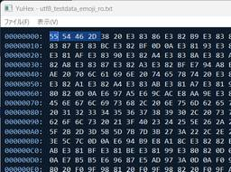
絵文字にも対応、国産でシンプル・モダンなバイナリエディター「YuHex」／4GBを超える巨大ファイルも扱える【レビュー】
28窓の杜
「YuHex」は、バイナリファイルの編集、検索、エンコーディングの変更などの機能を備えた、国産のシンプルでモダンなバイナリエディター。64bit版のWindows 11に対応するフリーソフトで、作者のWebサイトから無償でダウンロードできる。
5日前
OpenAIの「Codex」にサンドボックス迂回のゼロデイ脆弱性 ～Trend MicroのZDIが指摘／有効な緩和策は「Codex」の利用を制限することのみ 24窓の杜
OpenAIのコーディングエージェント「Codex」に、サンドボックス迂回のゼロデイ脆弱性があるとのこと。Trend Microのセキュリティチーム「Zero Day Initiative」（ZDI）が米国時間4月28日、セキュリティレポート「ZDI-26-305」を公開した。
5日前
freee の Agile Security を支える Security Champions
23 freee Developers Hub
freee Developers Hub
こんにちは、北海道から freee red team*1に参加している yu です。 北海道は春らしい暖かい日が続き、雪も溶け、私は冬に家の前で落としたスマートリングをようやく見つけることができました。北国での冬の落とし物は往々にして春を待たなければならないことがあります。 さて、そんなことよりも今日は2022年に始まった freee Security Champions*2 のこれまでの歴史と、今なお進化し続けるこの制度についてご紹介します。 Security Champions Program の開始（2022年） 2022 年に私が freee へ入社した頃、当時の PSIRT（Prod…
5日前
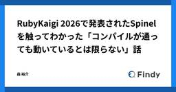
RubyKaigi 2026で発表されたSpinelを触ってわかった「コンパイルが通っても動いているとは限らない」話 19 Findy Tech Blog
こんにちは。プロダクト開発部の森 @jiskanulo です。 2026年4月22日から24日までRubyKaigi 2026 Hakodateが開催されました。 rubykaigi.org 函館アリーナを3日間に渡って貸し切る大規模イベントの運営をしていただきましたスタッフの皆様に感謝を申し上げます。 ファインディ株式会社もPlatinumスポンサーとして協賛しました。 私もブースに立って出展やファインディ各サービスのご案内をさせていただきました。 お話しをしていただいた皆様にも重ねて感謝申し上げます。 ブースに立つ合間にセッションを聞いて自分でやれそうなことに思いを馳せたり、他社様のブース…
5日前
Anthropic、セキュリティ特化ツール「Claude Security」 AIがコードをスキャン→脆弱性を修正 11ITmedia AI＋ 最新記事一覧
米Anthropicは、セキュリティに特化したAIツール「Claude Security」（パブリックβ版）の提供を始めた。AIがコードをスキャンして脆弱（ぜいじゃく）性を検出し、ワンストップで修正できる。
5日前
【Excel】その手作業、実は必要ありません！ タイパ良好なエクセルワザ5選【いまさら聞けないExcelの使い方講座】 14窓の杜
あっという間に4月も終わりが近づいてきました。毎日のようにExcelを操作していれば、自信も付いてきたのではないでしょうか。Excelを使った業務は、単純な入力やコピーの繰り返しが多いように感じがちですが、同じ作業でもやり方によって、作業時間やミスの発生率には大きな差が生まれます。
6日前
Google搭載車でも「Gemini」 自然な会話でナビやメッセージ送信が可能に 8ITmedia AI＋ 最新記事一覧
Googleは、「Android OS」を車両に直接組み込んだ「Google搭載車」向けに、AIアシスタント「Gemini」の提供を開始すると発表した。従来のGoogleアシスタントに代わり、自然な会話形式でナビやメッセージ管理、音楽再生、車両設定の変更などが行えるようになる。まずは米国の英語ユーザーから展開し、順次拡大していく計画だ。
5日前
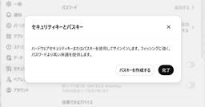
OpenAI、「ChatGPT」に物理キー対応の高度なセキュリティ機能「AAS」を導入 7ITmedia AI＋ 最新記事一覧
OpenAIは、ChatGPTユーザー向けの保護機能「Advanced Account Security」を発表した。パスキーや物理キーによる認証を導入し、アカウント回復手段を制限することで安全性を高める。有効化によりAI学習の対象からも自動で除外される。Yubicoとの提携による専用キーの優待販売も実施し、全ユーザーが利用可能だ。
5日前
Spotifyが人間アーティスト認証バッジ導入──AI生成コンテンツとの識別を強化 5
ITmedia AI＋ 最新記事一覧
Spotifyは、人間のアーティストであることを示す認証バッジ「Verified by Spotify」の導入を発表した。認証にはリスナーの持続的な支持などの実在証跡が必要で、AIアーティストは対象外。判定にはアルゴリズムと人間によるレビューを組み合わせる。
5日前
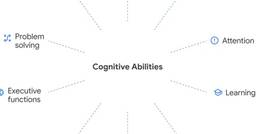
AGIはどうすれば実現するのか？ 知性を成す「10の認知能力」をGoogleが特定 5ITmedia AI＋ 最新記事一覧
Google DeepMindは、「AGI」の実現への進捗を測定するための認知フレームワークを提示した論文を発表した。AIシステムの「知性」を評価する実証的ツールの不足を受け、認知科学を基盤とする新たな評価手法を提案した。
5日前
Windowsをゲームパッドで快適に使えるゲーム専用UI「Xboxモード」が正式展開、「Steam」「Epic Games」のゲームでも利用可能／「ROG Xbox Ally X」向けAI高画質機能も一部で提供 3窓の杜
マイクロソフトは5月1日、Windows 11に向けて、「Xboxモード」の配信を開始した。4月にRelease Previewとして提供されていたものが、本実装されたかたちとなる。
4日前
無料メーラー「Thunderbird」に致命的な脆弱性 ～修正版のv150.0.1がリリース／クラッシュの不具合も修正 3窓の杜
オープンソースのメールソフト「Thunderbird」v150.0.1が、4月30日にリリースされた。本リリースは、脆弱性と不具合を修正したメンテナンスリリースとなっている。
4日前
「Claude Mythos」でセキュリティはどう変わる？ 競合「GPT-5.4-Cyber」と比較 3ITmedia AI＋ 最新記事一覧
4月に発表された米AnthropicのAIモデル「Claude Mythos Preview」と米OpenAIの「GPT-5.4-Cyber」。サイバーセキュリティの観点から両者を比較する。
5日前
社内向けAIアシスタントを3か月間試験運用してみた 3 松尾研究所テックブログのフィード
松尾研究所テックブログのフィード
松尾研究所のからあげ（@karaage0703）です。松尾研究所では 2026年2月ごろから、Slack上でOpenClawライクな社内AIアシスタントソフトを、一部のプロジェクトで試験運用してきました。この記事では、AIアシスタントソフトの概要・活用例・実運用アンケート結果についてまとめたものの一部を紹介します。社内ツールの紹介ではありますが、「どのように業務でAIを活用していくか」という同じ悩みを持つ方の参考になれば幸いです。 AIを活用して業務の負荷軽減をしたい松尾研究所では、共同開発案件の数が増えるにつれてPMまわりの「情報検索」「議事録・週報の作成」「PRレビューの一...
5日前
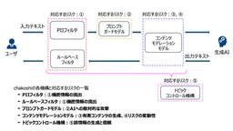
日本語特化型AIガードレール「chakoshi」でGENIAC-PRIZE 2位を受賞しました 4 NTT docomo Business Engineers' Blog
NTT docomo Business Engineers' Blog
NTTドコモビジネスが開発する日本語特化型AIガードレール「chakoshi」が、経済産業省・NEDO主催の懸賞金活用型プログラム「GENIAC-PRIZE」安全性領域で本審査2位を受賞しました。本記事では、chakoshiの概要と、単一構成から多層防御アーキテクチャへ進化させた技術的なポイント、そしてGENIAC-PRIZEでの取り組みについてお伝えします。 はじめに chakoshiとは GENIAC-PRIZEとは chakoshiの変遷 - 単一構成から多層構成への改善 - 単一構成の限界 リスクの特定と分類から防御機構を設計 1. 機密情報の流出 → PIIフィルタ、ルールベースフィ…
5日前
トラフィックデバッグもエージェントに任せる時代に、「Fiddler MCP」が登場／定番のWebデバッガープロキシー「Fiddler」をMCPサーバーに 4窓の杜
米Progress Softwareは4月23日（現地時間）、「Fiddler MCP」を発表した。定番のWebデバッガープロキシー「Fiddler Everywhere」にMCPサーバーを実装したことで、さまざまなコーディングエージェントと連携できるようになった。
6日前
深淵にひっそりと咲く一輪の花を想起させる妖艶なフォント「黒華明朝」／「源ノ角ゴシック」「源ノ明朝」ベース、商用も可能な「SIL OFL-1.1」ライセンス 3窓の杜
深淵にひっそりと咲く一輪の花をイメージして制作されたという日本語フォント「黒華明朝」が4月27日、「BOOTH」で公開された。「Pixiv」アカウントがあれば無償でダウンロード可能。500円（税込み）で購入して、制作を支援することもできる。
5日前
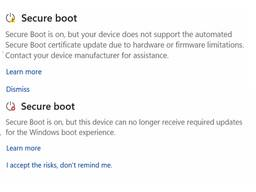
6月以降、PCが起動不能になる前に！ 「Windows セキュリティ」でセキュア ブート証明書の状態を提示【再掲】【今すぐ読みたい！人気記事】 3窓の杜
2026年5月からはシステムアラートなどでも通知
7日前